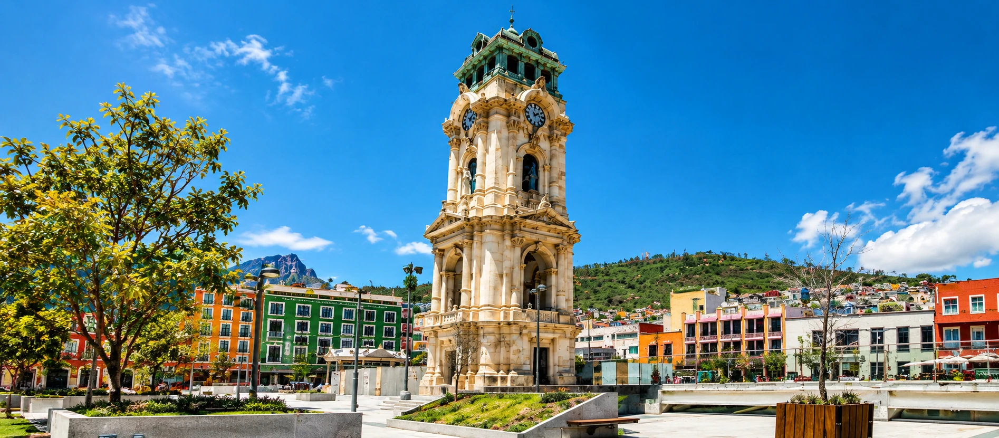
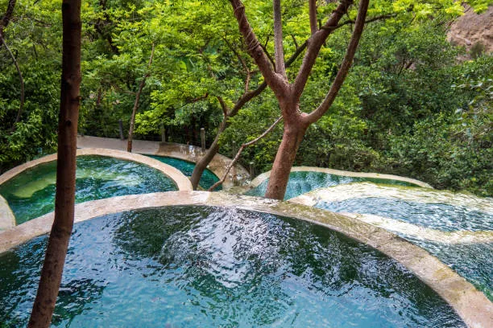
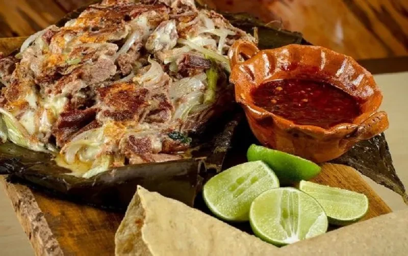

Bienvenido a Hidalgo
Un destino turístico en el corazón de México
Explora lugares increíbles y vive nuevas experiencias.
Comenzar a explorarPueblos Mágicos
Rincones llenos de historia colonial, calles empedradas y tradiciones vivas.

Naturaleza y Aventura
Grutas, cascadas, bosques y aguas termales para los amantes de la aventura.

Gastronomía Tradicional
Pastes, barbacoa, ximbo y sabores únicos de la tradición hidalguense.
Un estado lleno de historia y belleza natural
Hidalgo es una tierra de contrastes ubicada en el corazón de México. Desde valles y fuentes termales turquesa hasta parques nacionales y una profunda tradición cultural y minera. Cada rincón de este estado te sorprenderá con su riqueza natural, su gastronomía y la calidez de su gente.
Destinos destacados
Los lugares más visitados y mejor valorados por nuestros viajeros.
 Naturaleza
Naturaleza
Prismas Basálticos
Huasca de Ocampo
Impresionantes columnas de basalto con cascadas que crean un paisaje único en el mundo.
Naturaleza
Grutas de Tolantongo
Cardonal
Aguas termales turquesa, grutas naturales, río y pozas escalonadas entre la sierra.
Pueblo Mágico
Real del Monte
Mineral del Monte
Pueblo minero con herencia inglesa, famoso por sus pastes y calles de cantera.
Pueblo Mágico
Huasca de Ocampo
Huasca de Ocampo
Haciendas coloniales, bosques de niebla y el primer Pueblo Mágico de Hidalgo.
Explora Hidalgo en el mapa
Descubre la ubicación exacta de cada destino turístico, filtra por categoría y planifica tu próxima aventura.
Abrir mapa interactivo